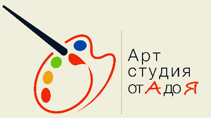

С октября 2023 года ужесточены требования к организации воинского учета на предприятии. Приглашаем Вас принять участие в семинаре, где мы подробно разберем вопросы изменения законодательства и поделимся практическим опытом ведения воинского учета с учетом нововведений. См. письмо ниже.
Внимание!
Размещено 29 октября 2023
 «АРТ СТУДИЯ от А до Я»
ЧУ ДПО «Промбезопасность» производит набор в группы по общеразвивающим программам художественной направленности
Размещено 05 сентября 2023
1.Программа дополнительного образования для детей 7-13 лет
Дополнительная образовательная программа рассчитана на 2 года.
Расписание занятий по каждому из направлений строится из расчета два занятия в неделю по 2 академических часа
Группа детей 6-8 человек
2. Программа дополнительного образования детей 14-16 лет
Дополнительная образовательная программа рассчитана на 3 года и имеет свой алгоритм организации.
Расписание занятий по каждому из направлений строится из расчета два занятия в неделю по 2 академических часа
Группа детей 6-8 человек
3.Курсы для взрослых (возраст обучающихся 18 - 65 лет)
Программа - Рисование как хобби для тех, кто хочет классно провести
время, отвлечься от быта.
Расписание занятий по каждому из направлений строится из расчета 1 занятие в неделю по 3 академических часа
Начало занятий с 1 октября 2023г.
Контакты:
153003, г. Иваново, ул. Парижской Коммуны, дом 16,оф. 102
E-mail: prombez37@gmail.com, сайт: prombez37.ru
Тел. 8-930-347-65-99 (Галина Михайловна)
Внимание!
Размещено 01 июля 2022
Наш учебный центр предлагает новую услугу "Оценка профессиональных рисков". См. письмо ниже.
Приглашаем на обучение!
Размещено 01 июля 2022
Терроризм представляет одну из самых серьезных угроз миру и безопасности. В нашем учебном центре разработана новая программа "Противодействие терроризму и экстремизму". См. письмо ниже.
Приглашение на обучение по противодействию терроризму и экстремизму
Приглашаем на обучение!
Размещено 01 июля 2022
В соответствии с указом Президента РФ от 16.08.2021 наш учебный центр организовал обучение по новой программе "Противодействие коррупции". См. письмо ниже.
Приглашаем на обучение!
Размещено 01 июля 2022
В соответствии с законодательством РФ с 01.03.2022 осуществляется обучение мерам пожарной безопасности вместо ПТМ. См. письмо ниже.
Новый образец заявления на аттестацию
Размещено 25 июня 2021
Внимание!
Вступил в силу Административный регламент Ростехнадзора по организации проведения аттестации (приказ № 459 от 26.11.2020). С 28.06.2021 документы в Ростехнадзоре принимаются по новым образцам:
Заявка в Ростехнадзор на аттестацию по всем областям промышленной безопасности
Новые реквизиты гос.пошлины по аттестации
Размещено 01 января 2021
Внимание!
Изменились реквизиты для оплаты государственной пошлины по аттестации. Образец заполнения платежного поручения доступен по ссылке ниже.
Новая форма заявления
Размещено 18 декабря 2020
Внимание!
Изменилась форма заявления на проверку знаний по тепловым энергоустановкам и на группу по электробезопасности.
Новый адрес расположения Учебного центра!!!
Размещено 01 марта 2020
Сообщаем, что ЧОУ ДПО "Промбезопасность" переехало и теперь мы располагаемся по адресу: 153003, г. Иваново, ул. Парижской Коммуны, д. 16, пом. 102.
Об изменениях в области подготовки и аттестации работников организаций, поднадзорных Федеральной службе по экологическому, технологическому и атомному надзору
Размещено 30 ноября 2019
В связи со вступлением в силу Постановления Правительства РФ от 25.10.2019 № 1365
"О подготовке и об аттестации в области промышленной безопасности, по вопросам безопасности гидротехнических сооружений,
безопасности в сфере электроэнергетики" и Временного порядка предоставления Федеральной службой по экологическому,
технологическому и атомному надзору государственной услуги по организации проведения аттестации в области
промышленной безопасности гидротехнических сооружений, безопасности в сфере электроэнергетики, утвержденного
приказом Ростехнадзора от 06.11.2019 № 424 изменен порядок подготовки и аттестации работников организаций,
поднадзорных Федеральной службе по экологическому, технологическому и атомному надзору.
Новый образец заявления в Ростехнадзор и перечень прикладываемых к нему документов размещен в разделе Документы.
Также сообщаем, что приказом Ростехнадзора от 08.11.2019 № 430 отменен приказ Ростехнадзора от 29.01.2007 № 37 "О порядке подготовки и аттестации работников организаций,
поднадзорных Федеральной службе по экологическому, технологическому и атомному надзору"
Новый образец завления в Ростехнадзор и перечень прикладываемых документов
Новые образцы заявок
Размещено 09 июня 2018
Внимание! На сайте размещены новые образцы заявок в Ростехнадзор на проверку знаний на группу по электробезопасности и тепловым энергоустановкам.
Внимание!
Размещено 27 ноября 2017
Внимание! Остерегайтесь мошенников.
В последнее время в наш адрес поступают звонки с вопросом о смене наших реквизитов. Сообщаем, что наши регистрационные данные, в том числе название учреждения, расчетный счет и адрес электронной почты не изменялись.Благодарственное письмо
Размещено 24 апреля 2017
Глава города Иваново В.Н.Шарыпов вручил благодарственное письмо директору ЧОУ ДПО "Промбезопасность" С.М.Аленину.
О результатах проверки
Размещено 27 ноября 2016
Сообщаем, что по результатам проверки, проведенной департаментом образования Ивановской области в октябре-ноябре 2016 года, нарушений лицензионных требований при осуществлении образовательной деятельности ЧОУ ДПО "Промбезопасность" не выявлено.
Изменение банковских реквизитов
Размещено 04 мая 2016
ЧОУ ДПО "Промбезопасность" обращает внимание, что с 01 мая 2016 года платежи следует осуществлять по банковским реквизитам:
ИНН 3702951901 КПП 370201001
р/сч: 40703810117000000457
в Отделение № 8639 ПАО Сбербанк г.Иваново
кор/сч: 30101810000000000608
БИК: 042406608
Разъяснения к №44-ФЗ
Размещено 11 сентября 2015
Разъяснения к №44-ФЗ можно скачать по следующей ссылке.
О нас

ЧУ ДПО «Промбезопасность» проводит обучение по дополнительному профессиональному образованию и повышению квалификации рабочих и инженерно-технических работников.
Направления деятельности:
- Промышленная безопасность.
- Энергетическая безопасность.
- Экологическая безопасность.
- Безопасность ГТС.
- Охрана труда.
- Пожарная безопасность.
- Повышение квалификации руководителей и специалистов строительных организаций.
В процессе обучения принимают участие:
- аттестованные высококвалифицированные специалисты;
- представители территориального управления Ростехнадзора;
- ведущие преподаватели Ивановских ВУЗов.
Для удобства Вашей работы и экономии рабочего времени сотрудников ЧУ ДПО «Промбезопасность» может проводить обучение и проверку знаний с выездом на предприятие.